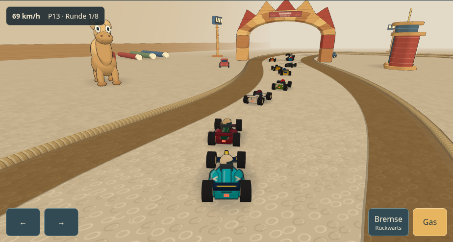
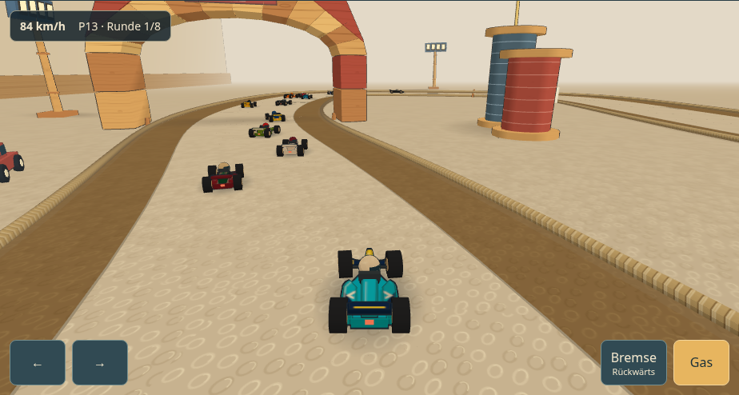
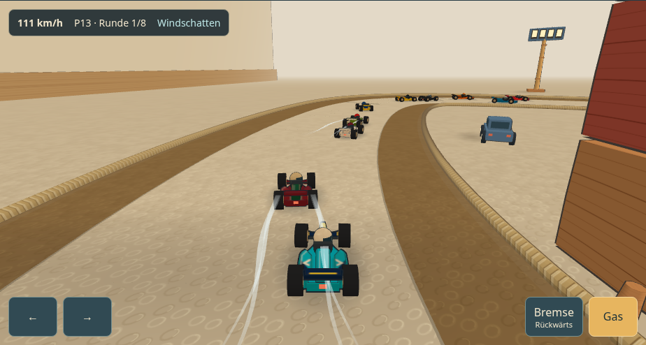
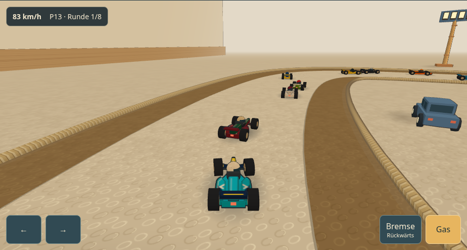
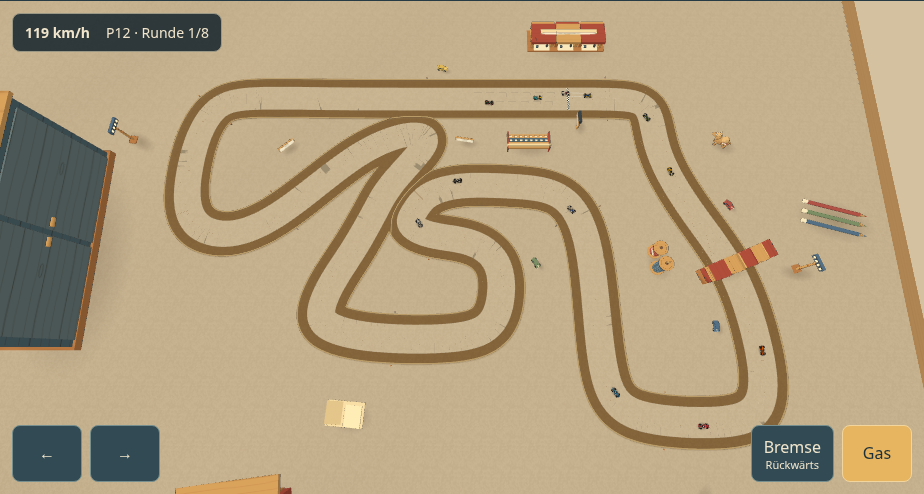
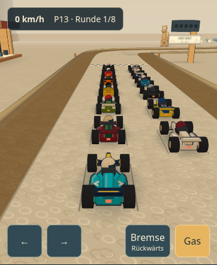
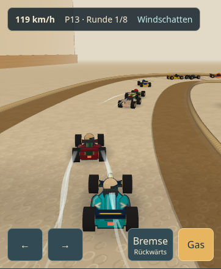

Carpet Grand Prix · Bahrain
Teppich, Bauklötze
und kleine Autos.
Die Fahrbahn besteht jetzt aus demselben Teppich wie die Umgebung. Nach der ersten Kurve steht ein Rundbogentor aus Holzklötzen mit fünf dreieckigen Dachsteinen. Vier geparkte Spielzeugautos ergänzen die Streckenränder.
Bahrain-Testfahrt starten →
13 RennfahrzeugeUnveränderte PhysikUnveränderte Seilbegrenzung
Alle Bilder zeigen das tatsächliche Spiel. Desktop- und Mobilaufnahmen entstanden während regulärer Tastaturfahrten; die Übersicht verwendet die vorhandene Schaltfläche „Gesamtstrecke“. Mobilformat in Chromium, kein Test auf einem echten iPhone.
Die Fahrbahn wird zum Teppich
 Vorher · bisheriger Bahrain-Umbau auf main
Vorher · bisheriger Bahrain-Umbau auf main
 Jetzt · durchgängiger Teppich, weiterhin dunklere Randzone
Jetzt · durchgängiger Teppich, weiterhin dunklere Randzone
Das Rundbogentor nach der ersten Kurve

Auf der Geraden zwischen den ersten beiden Kurven

Holzklotzstapel, runder Durchgang und dreieckige Dachsteine

Durchfahrt · ausreichend Platz für Fahrzeug und Verfolgungskamera

Die reguläre Kamera bleibt unverändert
Spielzeugautos und Streckenübersicht
Vier geparkte Autos: Rot, Blau, Grün und Gelb

Der frühere flache Tunnel wurde durch das neue Tor ersetzt
Mobilformat

Startaufstellung

Durchfahrt im Hochformat
Fahrbahngeometrie, Seile, Kollisionen, Startaufstellung, Rennphysik und KI sind unverändert. Das Tor und die geparkten Autos sind reine Dekoration.